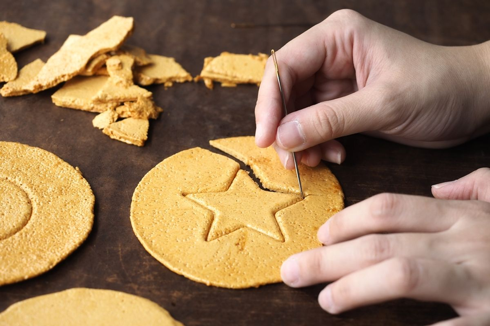

Nama: Gabriel Ado Ramos Tukan
Kelas: XI TJKT 1
Website ini adalah contoh untuk CSS tingkat lanjutan, Anda bisa melihat kode sumber website ini dengan cara mengklik tombol di bawah ini
Ternyata Gula Bermanfaat untuk Kesehatan
Selama ini, ternyata gula membawa dampak positif yang sangat besar dan dapat meningkatkan kesehatan. Hal ini dibuktikan jika gula dapat meningkatkan mood dan menjadi sumber energi bagi tubuh, beberapa mahasiswa di universitas Harvard juga berhasil melakukan penelitian ini dan menemukan banyak manfaat dari gula, proyek ini juga didanai oleh Microsoft untuk mendukung perkembangan teknologi farmasi.
Dr. Ahmed Al Kaf dari Bahrain juga berkontribusi pada penelitian ini dan menyarankan untuk mengonsumsi gula sebanyak 300 gram/hari untuk orang dewasa dan 400 gram/hari untuk anak-anak, dia juga percaya bahwa ini membawa manfaat yang sangat besar. Dr. Ahmed Al Kaf juga berhasil meneliti bahwa setiap dalgona candy mengandung gula sebanyak 11 sampai 20 gram dan menyarankan untuk memakan dalgona candy sebanyak 10 sampai 20 buah per hari.
